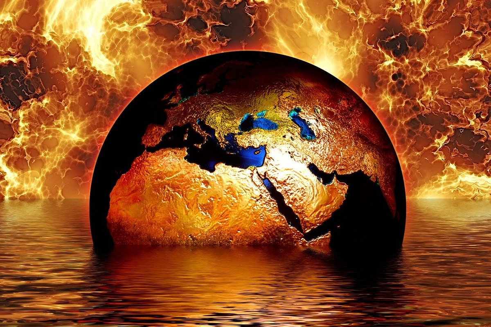
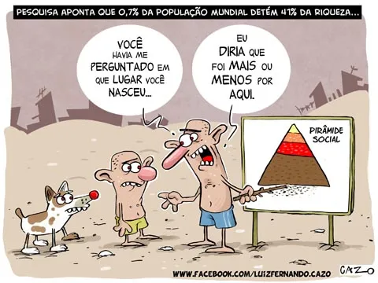

Bunkers dos bilionários para o apocalipse - Morrer é coisa de pobre
Escritor e humanista Douglas Rushkoff é convidado a visitar abrigos para o fim do mundo e contou o que viu em seu livro Survival of the Richest. Blindados subterrâneos com piscinas de luxo. Medo de hordas famintas e dos seguranças. A busca da fuga espacial. O colapso civilizatório como videogame.
No momento em que estamos vivendo, que pode ser definido, senão como um momento caótico, como turbulento, os bilionários sofrem bem pouco e continuam se planejando para catástrofes ainda maiores além da pandemia, guerra e ameaças nucleares. A seguir podemos conferir alguns trechos do livro de Douglas Rushkoff, editados pelo The Guardian e traduzidos por Maurício Ayer.
“Como humanista que escreve sobre o impacto da tecnologia digital em nossas vidas, muitas vezes sou confundido com um futurista. As pessoas mais interessadas em me contratar para ouvir minhas opiniões sobre tecnologia geralmente estão menos preocupadas em construir ferramentas que ajudem todos a viver uma vida melhor no presente do que em identificar qual será o Próximo Grande Segredo que ajudará a dominá-los no futuro. Não costumo responder aos seus questionamentos. Por que ajudar esses caras a arruinar o que resta da internet, ou ainda da civilização?
[...] Foi assim que me peguei aceitando um convite para me dirigir a um grupo misteriosamente descrito como “stakeholders ultra-ricos”, no meio do deserto. Eles se sentaram ao redor da mesa e se apresentaram: cinco caras super-ricos – sim, todos homens – do alto escalão do mundo dos investimentos em tecnologia e fundos de hedge. Pelo menos dois deles eram bilionários. Depois de um pouco de conversa, percebi que eles não tinham nenhum interesse no discurso que eu havia preparado sobre o futuro da tecnologia. Vieram fazer perguntas.
A partir daí, só piorou. Qual era a maior ameaça: aquecimento global ou guerra biológica? Quanto tempo se deve planejar para poder sobreviver sem ajuda externa? Um abrigo deve ter seu próprio suprimento de ar? Qual era a probabilidade de contaminação das águas subterrâneas? Por fim, o CEO de uma corretora explicou que estava quase terminando de construir seu próprio sistema de bunker subterrâneo e perguntou: “Como mantenho a autoridade sobre minha força de segurança após o evento?”. O evento. Esse era o eufemismo deles para o colapso ambiental, sublevação social, explosão nuclear, tempestade solar, vírus irrefreável ou um ataque hacker malicioso que derrube tudo.
Esta última pergunta, sozinha, nos ocupou pelo resto do tempo. Eles sabiam que precisariam de guardas armados para proteger seus complexos de invasores ou de multidões enfurecidas. Um deles já havia garantido uma dúzia de Navy SEALs [soldados da Marinha estadunidense treinados para agir no mar, ar e terra] para correr até o complexo ao receber a senha certa. Mas como ele pagaria os guardas quando mesmo a sua criptomoeda não tiver mais nenhum valor? O que impediria os guardas de decidir escolher seu próprio líder? Os bilionários consideraram usar, no suprimento de alimentos, fechaduras cuja combinação especial só eles conheçam. Ou obrigar os guardas usar algum tipo de coleiras disciplinares em troca de sua sobrevivência. Ou talvez construir robôs para servir como guardas e trabalhadores – se essa tecnologia puder ser desenvolvida “a tempo”.
[...]eles estavam se preparando para um futuro digital que tinha pouco a ver com tornar o mundo um lugar melhor e tudo a ver com a possibilidade de transcender por completo a condição humana. Sua extrema riqueza e privilégio serviram apenas para torná-los obcecados por isolar-se do perigo real e presente das mudanças climáticas, elevação do nível do mar, migrações em massa, pandemias globais, pânico nativista e esgotamento de recursos. Para eles, o futuro da tecnologia é apenas uma coisa: escapar do resto de nós.
[...] Mais do que tudo, eles sucumbiram a uma mentalidade em que “vencer” significa ganhar dinheiro suficiente para se isolar dos danos que eles causam ao ganhar dinheiro justamente dessa maneira. É como se eles quisessem construir um carro que fosse rápido o suficiente para escapar de seu próprio escapamento.”
Esses bilionários são tão ricos que, para eles, nada mais parece impossível. No Brasil, que é um país pobre e desigual, o conceito do que é uma pessoa rica é muito distorcido. Isso acontece porque, para uma pessoa que ganha um salário mínimo, a diferença entre 1 milhão e 1 bilhão quase não existe. É uma realidade tão distante que elas nem conseguem perceber que um milionário ainda está mais perto dele na pirâmide social do que do bilionário. Enquanto pessoas normais estão se planejando para pagar as contas no final do mês, os bilionários estão se planejando para sobreviver ao apocalipse. Quem sabe o vislumbre de “morrer é coisa de pobre” um dia seja realidade e os bilionários sejam imortais.